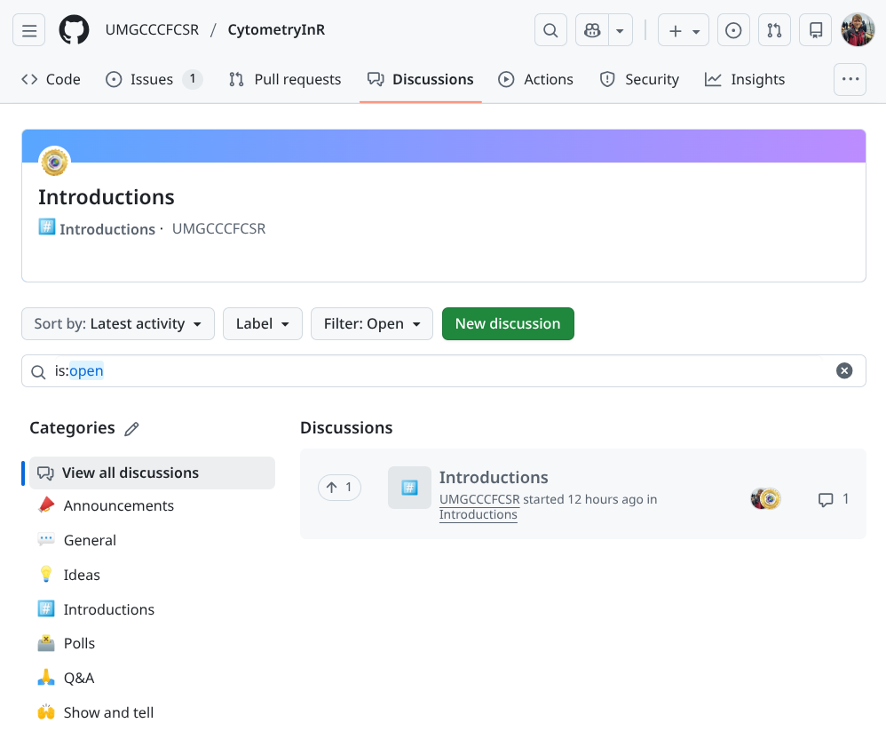
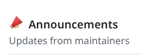
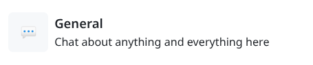
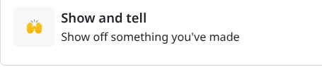
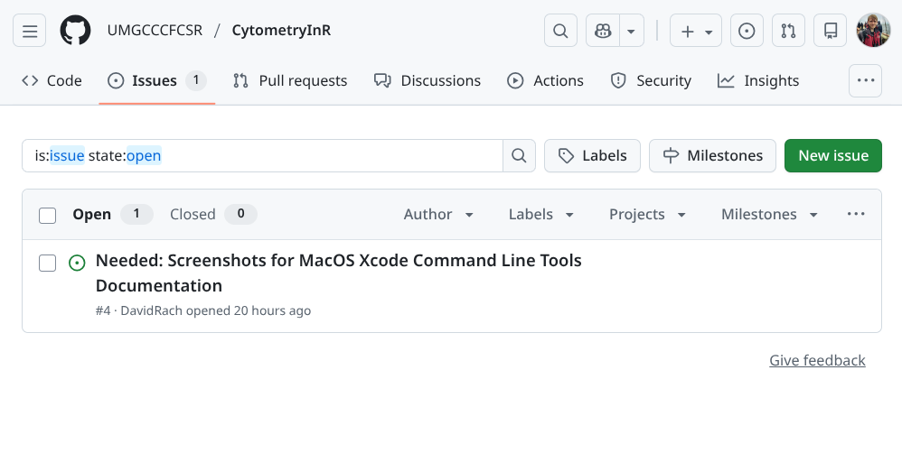

Getting Help


Background
In the previous sections, we set up our GitHub account, installed the required software, and further explored various elements of Positron, Git and Quarto that we will be using throughout the course.
This is our first year offering the course. Although we can and will answer questions during the livestreams, given the number of people signed up that might have a question, we want to make sure to provide multiple avenues by which you can get help and feedback throughout. These include the Discussions Forum, where you can ask questions, discuss topics, get feedback and celebrate wins; and 2) turning in optional take-home problems via a pull request, in which the course instructors will take a look and provide additional feedback.
In this walk-through, we go over how to use these resources.
Getting Started
Discussions Forum
On the course’s GitHub repository, we have opened up a Discussions page that we plan to use as a community forum. We hope that it will serve multiple functions, from providing a better sense of community for the online participants, to facilitating asking and receiving help on something that is not clear, provide feedback about something that it not working out, as well as a place to celebrate and show off your coding wins.

To keep the Discussions forum semi-organized, we have set up several categories, please select the appropiate category when opening a new discussion!
Code of Conduct

We ask that all course participants read and adhere to the spirit of our Code of Conduct. We are all human, at different points in our learning journeys, so what may be obvious to you at your point of your learning journey may have necessarily be obvious to someone just getting started. This course is our giving back to those in the community, but is on a voluntary basis in addition to our regular workload. While we try to reply quickly, sometimes our cell sorters fully melt down sending everything into chaos. We will reply when we can.
Announcements

When we send out an email to all participants, we will also repost it as an announcement. This ensures that even if you are not on our mailing list, you will still be able to have access to important information and course updates.
General

This section category can be used for any discussions that you think are worth having, that don’t fall under any of the other category. Good examples are continuing a discussion that was held during one of the livestreams; wanting to discuss and dive further into a given week’s topic; or bringing in additional resources that you found useful to understandingn something that didn’t click initially. This space is for the community to shape as they see best.
Ideas
Have an idea for a new topic or a way to improve the course? We would love to hear them. Provide as many details, and ideally, an example, and if it is doable, we will try to implement them.
Introductions

Online courses can be odd in terms of replicating in-person dynamics. Fortunately, we have gathered the largest cohort of “cytometrist with no-to-little flow experience trying to learn R at the same time” that the world has ever seen, so best to take advantage of this while we can. Treat this section as if we had just met at a conference, tell us about yourself, what brings you here, and what you want to hopefully be able to do after the course ends.
Polls

Occasionally, we will need to gather community feedback on what is working and what is not working. We will sporadically post Polls for this purpose.
Q&A

The Questions and Answers (Q&A) section is where you go if something is not clear, not working, and you are trying to troubleshoot your way through it. First thing before posting, search! to see if someone has already asked the question. If you don’t find anything, go ahead and open a new discussion.
Since we are not at your computer, and don’t have your dataset, when troubleshooting it is best to include a minimal reproducible example of the issuen you are encountering, slimming down the number of files needed to be transferred, and generalizing down the code so that other course participants and instructors can follow along. If this is not doable, or if the problem requires added context (and larger files), create a new repository on your GitHub, make it public, and share the links to it in your post. The goal would be to download the folder and be able to replicate the issue that you are encountering.
Show and Tell

Where Q&A section is for getting help on code that is frustratingly not working, Show and Tell is where to go and celebrate when you finally get things to work. Share your wins, show us the extra pretty graphs, bizarre autofluorescence signatures, or odd outputs that just make you laugh.
Issues
Most of the time, if you are having trouble getting you code to run, you should first stop after some initial troubleshooting should be to open a new Discussion under the Q&A category. Here you will be able to get both community and instructor help and suggestions to hopefully resolve whatever is going on.

The Issues page is primarily meant for course-specific problems that require the course instructor intervention to fix. For example, we release a new week of material, and while it runs fine for both Windows and Linux, the code fails to run for all MacOS users. While you may be able to find workarounds on your own, it’s ultimately our responsibility to help provide a solution so that everyone can move forward. This is the situation where opening an Issue is appropiate.
Similarly, if our code contains a wrong argument, is returning a deprecation warning, etc. open an issue to let us know. While we may not be able to fix something that is not directly related to our code, we can redirect it to the package maintainers so that they can fix the issue.
And likewise, if you find multiple typos in the documentation, you can open an issue and propose carrying out a pull-request to fix them.
Submitting Take-Home Problems
Each week, during the course, we introduce and cover the main concepts for the particular concept. Our goal is to provide you with the necessary code and enough code to be able to get the jist. However, to become comfortable and be able to apply what you have learned, you will need to explore beyond our examples, try it with your own datasets, encounter things that don’t work, and troubleshoot your way through them. It’s this cycle of venturing into the unknown that develops strong coding skills that are needed to overcome any barrier you encounter. The goal of the take-home questions is to provide some less curated problems that will take a little longer to answer to help get you started on your own exploration of the topic.
As previously mentioned, these take-home problems are completely optional. If you are in the middle of solving them and want to seek feedback from then community and course instructors, open a Discussion under the general category is the way to go.
However, if you have completed them, and want course instructor feedback, you can submit them to us in the form of a pull-request to the CytometryInR repo’s homework branch. We will take a look, offer constructive suggestions, and when ready merge the solution. This will also result in GitHub listing you as a contributor to the course.
We will outline the basic steps of how to set up and open a pull-request, to help simplify the process.
Sync your Fork
First off, make sure to Sync your fork of the Cytometry in R project. That makes sure that all the commits present are up-to-date and simplifies the process of having the pull-request being merged.
Pull to Local
Having Synced your branch, pull in the changes to your local computer.
Create a Branch
Using the terminal, create and switch to a branch named for that Week (Week1).
Create own Folder under Homeworks
Within the branch, under the course folder, you will find each week’s folders. Locate the week corresponding to the TakeHome problem, and within locate the homework folder. This folder will be empty except for a README file with instructions. This is then location where you will need to create your own Folder under.
To ensure there are no conflicts on the pull-request merge, please use your GitHub username as the folder name.
Copy your files
Once you have your folder inside homework, go ahead and copy anything you are turning in. Remember, the goal is minimal reproducible example is the goal. Rendered Quarto Documents are preferred, but we will also accept scripts and small data files and images. a README.MD file with anything you want me to know,
Sign off Commit
Now that everything is present, Sign Off and Commit the change.
Push Branch to GitHub.
Proceed to push the branch to GitHub.
Open a pull-request
Navigate to the Pull Request tab and create one, going from your respective week’s branch, to our homework branch. Since the only changes should have been within your folder within homeworks, they should be compatible with each other and capable of merging
Wait for Feedback
Once you have opened a Pull-request, we will review your work, offer constructive suggestiongs. If I ask for revisions, all you would need to do is update and commit again to your side of the local forked repository.
Final Review and Merge
If all is good, we will merge the pull request and your solution to the take-home problems will now be available on the homework branch.
After course
After the course completes, we will merge homework branch with the main branch, making the community solutions to the take-home problems additional coding examples that can be used by others following along after the course concludes.
Wrap-up
In this walk-through, we covered the Discussions Forum, mentioned appropiate use cases for the Issues page and provided the logistics of how to submit take-home problems as a pull request to the homework branch. We have now covered all the major elements that you will be using throughout the course.
The next couple sections cover our thoughts on AI use in a course for coding beginners, and an optional walkthrough of how to use Floreada in preparation for some topics starting around Week 5.
Additional Resources